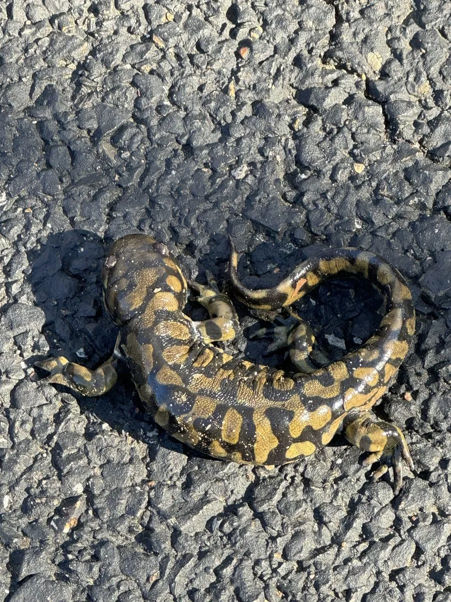

两栖动物 · 动物界
虎纹钝口螈 Ambystoma tigrinum

北美洲分布最广的陆栖螈类之一，身上有虎皮状黄黑斑纹，幼体在水中生活，部分种群会保持幼态，适应力很强。
- 分类
- 门脊索动物门纲两栖纲目有尾目科钝口螈科属钝口螈属
- 栖息环境
- 北美洲的森林、草原、农田与半干旱地区，繁殖期进入池塘
- 地理分布
- 北美洲大部分地区
- 保护级别
- IUCN 无危（LC）；非中国原产，在中国无保护级别
物种志
虎纹钝口螈体长 15–25 厘米，个别可超过 30 厘米，是体型较大的陆栖螈类。它头部宽扁，皮肤粗糙并带有颗粒状腺体，背面呈深褐或黑色，缀有黄色、橄榄色的斑块与条纹，形似虎皮，“虎纹”之名由此而来；四肢粗壮，尾部侧扁。
它广泛分布于北美洲的森林、草原、农田和荒漠边缘，成体多在地下洞穴或落叶层中生活，雨后出来捕食蚯蚓、昆虫、蛙类和小型哺乳动物。每年春季繁殖，雌螈在池塘中产下数百枚卵，卵约 2–3 周孵化，幼体在水中生活 2–4 个月后变态；部分地区的种群会因环境条件保留外鳃，出现“幼态持续”现象。它适应力强、分布广，被列为无危物种；在中国它属于外来物种，不可随意放生。
形态与习性
- 食性蚯蚓、昆虫、蛙类和小型哺乳动物
- 体长15–25 cm，最大可超 30 cm
- 寿命约 10–16 年
- 繁殖卵生，每次数百枚，约 2–3 周孵化
- 活动节律夜行性，雨后活动频繁
- 特点部分种群会保留外鳃，出现幼态持续
趣味知识
- 虎纹钝口螈是北美洲分布最广的螈类之一，从森林到半荒漠都能见到。
- 它的黄色斑纹形似虎皮，“虎纹钝口螈”的名字正是由此而来。
- 部分地区的虎纹钝口螈幼体会保留外鳃、不完成变态，这种现象称为幼态持续。